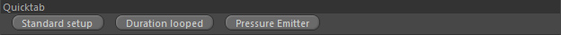
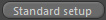
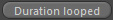
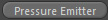

Quicktab
Parameters
Quicktab

Standard setup

If you created this Grid Emitter manually, you can click "Standard Setup"
to generate the most basic node setup to emit values into a single target grid.
It will generate the following nodes:
1. Container::Channel/Settings: to define the target channel and the grid emission settings used for it.
2. Settings::Grid Emission: the actual settings for the emission into the target channel.
Duration looped

Generates a duration node providing a looped emission (like a pulse).
Each emission pulse lasts for 0.2 seconds and it creates 10 pulses (with half a second intermediate pause).
You need to assign the duration in any Settings::Grid Emission that should use it.
Pressure Emitter

Generates a new emitter setup for emitting pressure (expansion) forces into a fluid simulation.
You need to assign a Volume in the newly generated emitter for it to work.
It will automatically link an existing fluid dynamics node.